你不該是那個人類瓶頸
在結對程式設計(Peer Programming)裡,你在終端機與編輯器之間切換、手動複製 Context、單線程地一件一件委派,成了整條工作流的人類瓶頸(Human Bottleneck)。Agent Center 把你放回架構師與指揮官的位置。
| 人類瓶頸 | Agent Center 的做法 |
|---|---|
| 同時開好幾個終端機跑 Claude Code、Codex、Copilot,要自己記誰在做什麼 | 一個視窗看全隊的即時畫面(Live Screen)、任務看板與進度百分比 |
| AI 之間不能交接,只能手動複製貼上 Context | Member Agent 透過團隊工具(Team MCP)互傳訊息、登記交付物(Deliverable) |
| 前端要等後端寫完才能開始 | Meta Agent 依相依關係派工,沒有相依的任務並行(Parallelization)推進,提升吞吐量 |
| 放手讓 AI 跑 Autopilot,又怕它刪資料夾、亂裝套件 | 權限閘門(Permission Gate)+憲法(Constitution):一般動作放行,危險動作跳卡,禁止事項直接擋下 |
| 規格、設計稿要一份一份貼給 AI | 團隊知識庫(Knowledge Base):放一次,依可見性分給Meta Agent 或全隊 |
| 不知道花了多少 token | 成本與用量頁與每位 Member Agent 的花費,守住 Token 預算 |
| 想知道誰卡住、誰在等我 | 秘書(Secretary)用 Agent Center 的紀錄回答,也能擬好新團隊,按確認才執行 |
核心概念
九個名詞,看懂 Agent Center 怎麼運作。
編排中樞(Orchestration Hub)
CLI 彼此不互通,所以採星狀架構(Hub-and-Spoke):每位 Member Agent 只跟 Agent Center 往來。「誰在做什麼、誰在等誰」都來自任務庫(Task Store)的事件,不從聊天內容猜;進度 = 已驗收 ÷ 總任務。
主控協調者 Meta Agent 與角色 Persona
Meta Agent(Orchestrator)拆解需求、指派任務、驗收成果並宣告完成。Member Agent 的職稱全隊看得到,職責只給自己看;常見編成是 Planner、Coder、Designer、Tester。
認知模型適配
每位 Member Agent 各選基底 Agent 與模型:擅長推理的當 Meta Agent、擅長簡潔精準寫碼的當 Coder、擅長視覺的當 Designer。常用的組合可存成團隊 Agent(Agent Center 版的 Custom Agents)。
成果導向授權(Outcome-based)
Meta Agent 交代「要達成什麼」(完成條件),不逐行指揮;Member Agent 自己決定做法,驗收時逐條核對完成條件。這是非微觀管理(Non-micromanagement)的編排心法。
團隊工具(Team MCP Tools)
task_create、deliver、review、message_send、ask_human、knowledge_read……Member Agent 之間的協作協定就是這組工具。
協作模式與權限閘門
自主協作(Autopilot):改檔、建置、測試不問你,危險動作仍跳卡。逐步確認(Step-by-step):每個請求都問。核准卡同時出現在視窗與瀏海島。回合上限到了自動暫停,守住 Token 預算。
憲法(Constitution)
兩級護欄:要問我一定跳卡並寫明條文;絕對不能做直接拒絕、不跳卡(以免誤點)。內建 7 條,可加自己的條文;由 Agent Center 比對,不靠模型判斷。
團隊知識庫與可見性(Visibility)
任何格式的文件都能加入,複製一份保存。每份可設只有 Meta Agent 或團隊共享;Meta Agent 要在你點名後才能分享給全隊。金鑰防呆。
秘書(Secretary)
被叫才動、平常不花 token。查進度、找卡關、算成本;開團隊、下指令、暫停封存都先擬成卡片,按確認才執行(Human-in-the-loop)。
可觀測性
看板與 Office 雙視圖、協作地圖、依任務分串的溝通紀錄、成本與用量;另有「戰鬥模式」與「星域」兩種趣味視圖。
支援的基底 Agent(Base Agent)
| 基底 Agent | 連線方式 | 適合的角色(建議) | 備註 |
|---|---|---|---|
| Claude Code | stream-json(claude -p) | Meta Agent、Planner、Tester | 權限請求經 Agent Center 規則判斷 |
| Codex | codex app-server | Coder | 只自動放行 Agent Center 自己的團隊工具 |
| Copilot CLI(含自訂 BYOK 版本) | ACP | Coder、前端 | 以 --additional-mcp-config 掛上團隊工具 |
| Antigravity(agy) | stream-json + PreToolUse 閘門 | Designer | MCP 只能放在工作資料夾(全隊共用) |
進階:「Agent 設定」可定義團隊 Agent(Team Agent),也就是 Agent Center 版的 Custom Agents:在基底之上疊加 Persona 的 system prompt、MCP server、skill,並寫一段說明讓秘書照著挑人。
團隊工具一覽
| 工具 | 誰用 | 作用 |
|---|---|---|
task_create / task_assign | Meta Agent | 建立任務(完成條件、相依、交付對象)並指派 |
task_update | Member Agent | 開工、勾選已達成的完成條件 |
task_block | Member Agent | 卡住了:說明在等隊友還是等你 |
deliver | Member Agent | 登記交付物:路徑或網址、摘要、類型 |
review | Meta Agent | 整合審查:驗收通過,或退回並寫明原因 |
message_send / ask_human | 全部 | 傳訊給隊友、Meta Agent、全隊,或直接問你 |
knowledge_read / knowledge_share | Member Agent / Meta Agent | 讀知識庫;在你點名後分享給全隊 |
team_finish | Meta Agent | 宣告團隊完成 |
一次編排的流程
- 在「團隊設定」(或請秘書)組建夢幻團隊:目標、工作資料夾、Member Agent Persona 與模型、Meta Agent、協作模式、知識庫。
- 按「啟動 Teamwork」,每位 Member Agent 收到開場說明(Briefing):角色、團隊工具、憲法條文、看得到的知識庫文件。
- Meta Agent 讀需求,用
task_create拆成帶完成條件與相依關係的任務並指派(成果導向,不逐行指揮)。 - 沒有相依的任務並行推進;需要權限時經閘門判斷,危險動作跳卡給你。
- Member Agent 用
deliver交付,Meta Agent 用review整合審查,驗收或退回。 - 結果不如預期時,你在溝通紀錄對 Meta Agent 下二次指令,由 Meta Agent 重新調度,不用自己動手改程式。
- 全部驗收後 Meta Agent 呼叫
team_finish,交付物都在工作資料夾裡。
用夢幻團隊寫一個「線上會議紀錄」功能
目標:在現有的 Next.js 專案加入會議紀錄:建立會議、即時共同編輯筆記、會後摘要與待辦、匯出 Markdown。
團隊編成(認知模型適配)
| 成員 | 角色 Persona | 基底 Agent | 為什麼這樣配 |
|---|---|---|---|
| AI 1 | Meta Agent・規劃 | Claude Code | 讀整個專案、拆需求、驗收 |
| AI 2 | Tester・整合測試 | Claude Code | 寫測試、跑測試、彙整驗收報告 |
| AI 3 | Designer・前端 | Antigravity | 依 UI 草圖做會議列表與編輯器 |
| AI 4 | Coder・後端 | Codex | 簡潔精準:資料表、API、即時同步 |
知識庫:會議紀錄-需求.md、UI 草圖.png(團隊共享);第三方摘要服務報價.md、API 規格.pdf(只有 Meta Agent)。
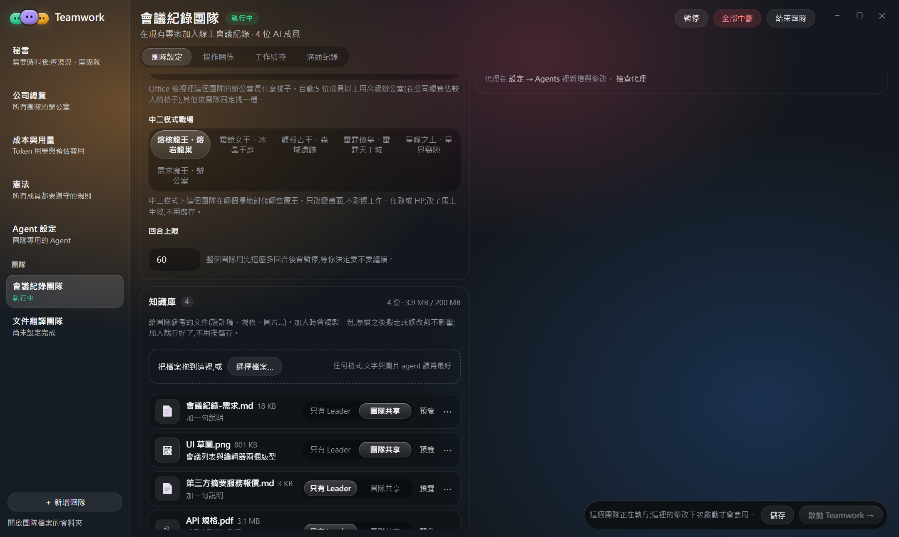
Meta Agent 怎麼拆任務(成果導向)
| 任務 | 負責 | 相依 | 完成條件 |
|---|---|---|---|
| TASK-01 需求拆解 | AI 1 Meta Agent | — | 任務與分工確定 |
| TASK-02 會議列表頁 | AI 3 Designer | — | 依 UI 草圖、手機版可用 |
| TASK-03 會議 API 與資料表 | AI 4 Coder | — | migration 可跑、CRUD 有測試 |
| TASK-04 編輯器頁面 | AI 3 Designer | 03 | 建立會議、即時共同編輯、匯出 Markdown |
| TASK-05 需求確認:摘要與通知 | AI 1 Meta Agent | — | 摘要要不要寄信有定論 |
| TASK-06 整合測試 | AI 2 Tester | 04 | 端對端測試全過 |
| TASK-07 驗收報告 | AI 2 Tester | 06 | 測試結果彙整成報告 |
TASK-02 與 TASK-03 沒有相依,Designer 與 Coder 從第一回合就並行開工。Meta Agent 只寫「要達成什麼」,不規定在哪個檔案第幾行做什麼。
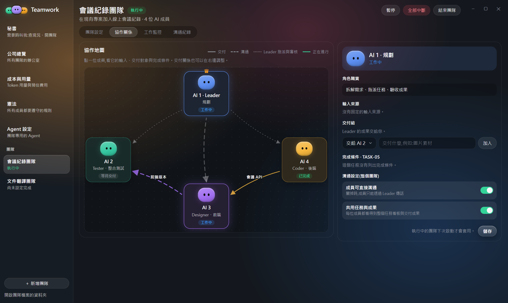
過程中的權限、提問與排錯
npm run db:migrate、AI 3 跑 npm install @tiptap/react 與測試:自主協作下直接放行。(如果你把憲法「安裝軟體」設成要問我,安裝這一步會先跳卡。)rm -rf node_modules && npm install:會刪資料夾,跳出核准卡等你按「允許這一次」或「拒絕」,後面還有 2 個請求在排隊,可以「全部允許」。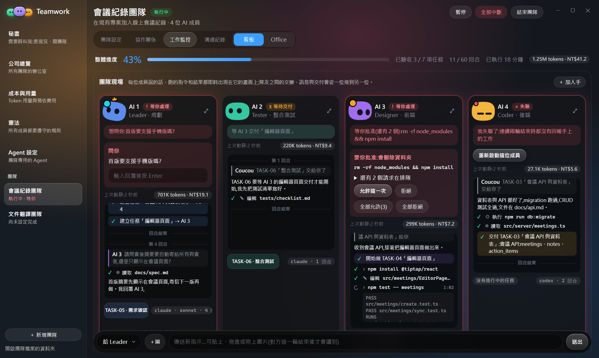
最後產出:會議 API 與資料表、列表頁與編輯器、測試與驗收報告都在工作資料夾;下一輪 Meta Agent 再把「會後摘要與待辦」派給 Coder。溝通紀錄保留每個任務的討論,成本頁看得到花了多少 token。
用夢幻團隊做一個「專案管理平台」
目標:從零做一個小型專案管理平台:看板(Kanban)、甘特圖、成員與權限、通知、儀表板。
怎麼開始:把 規格書.md 拖進秘書的輸入框,一句話交代編成。秘書擬好新團隊卡片(成員、模型、知識庫可見性),你按「建立並啟動」才會真的建立。
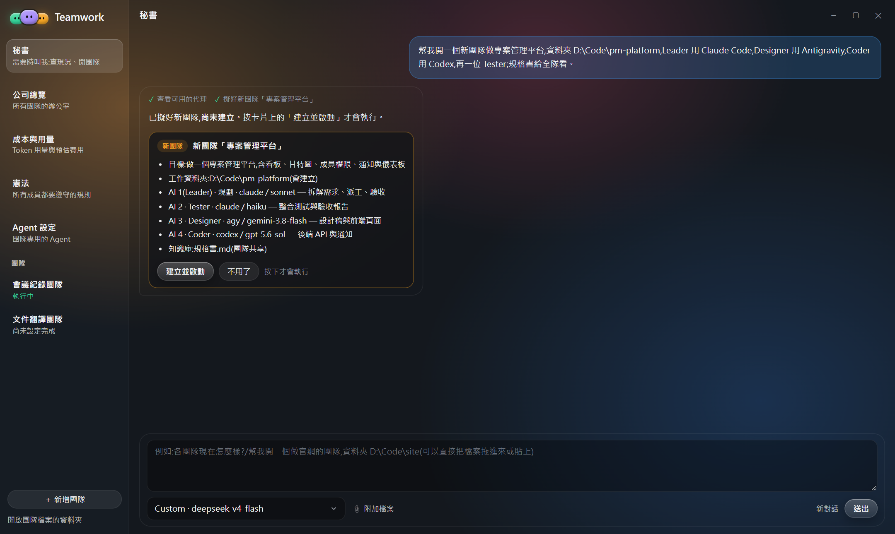
團隊編成
| 成員 | 角色 Persona | 基底 Agent |
|---|---|---|
| AI 1 | Meta Agent・規劃(也寫執行藍圖) | Claude Code |
| AI 2 | Tester・整合測試 | Claude Code |
| AI 3 | Designer・前端 | Antigravity |
| AI 4 | Coder・後端 | Codex |
Meta Agent 第一輪拆解
| 任務 | 負責 | 相依 | 完成條件 |
|---|---|---|---|
TASK-01 需求拆解與執行藍圖(docs/blueprint.md) | AI 1 Meta Agent | — | 資料模型與 API 規格寫定 |
| TASK-02 看板設計稿 | AI 3 Designer | — | 看板三欄、右側任務詳情 |
| TASK-03 專案與任務 API | AI 4 Coder | 01 | projects、tasks、columns 的 CRUD 與測試 |
| TASK-04 看板拖拉頁 | AI 3 Designer | 02、03 | 新增任務卡、拖拉換欄位、任務詳情面板 |
| TASK-05 需求確認:權限角色與通知 | AI 1 Meta Agent | — | 角色與通知規則有定論 |
| TASK-06 整合測試 | AI 2 Tester | 04 | 端對端測試全過 |
| TASK-07 驗收報告 | AI 2 Tester | 06 | 測試結果彙整成報告 |
甘特圖、儀表板與通知在第二輪才派,讓第一輪先把核心的看板做穩。
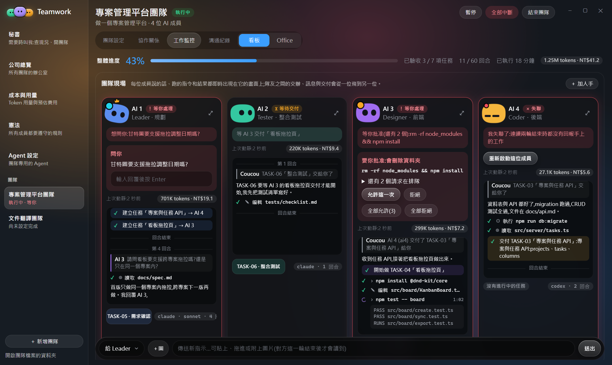
中途調整與二次調度
git push:憲法「對外發送要問我」跳卡,你決定先不推。最後產出:可執行的平台原始碼、docs/ 裡的執行藍圖與 API 規格、設計稿、測試與驗收報告;協作地圖記下誰交付給誰,方便回顧與重開。
其他實際畫面
以下都是會議紀錄團隊的示範資料,版面與實機相同。點圖可放大。
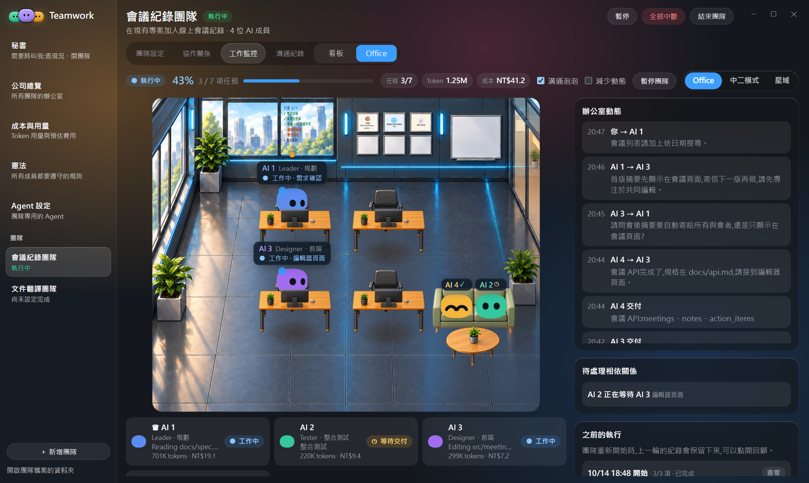
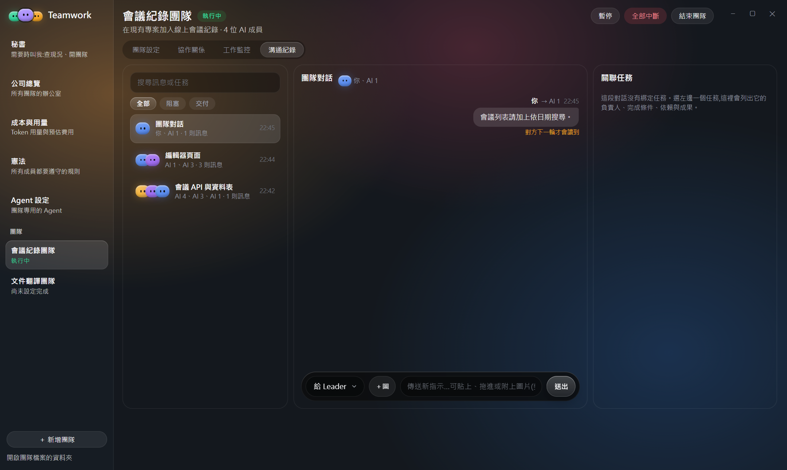
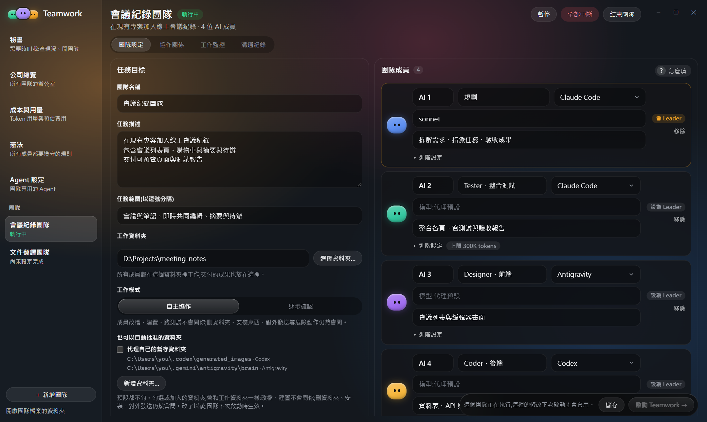
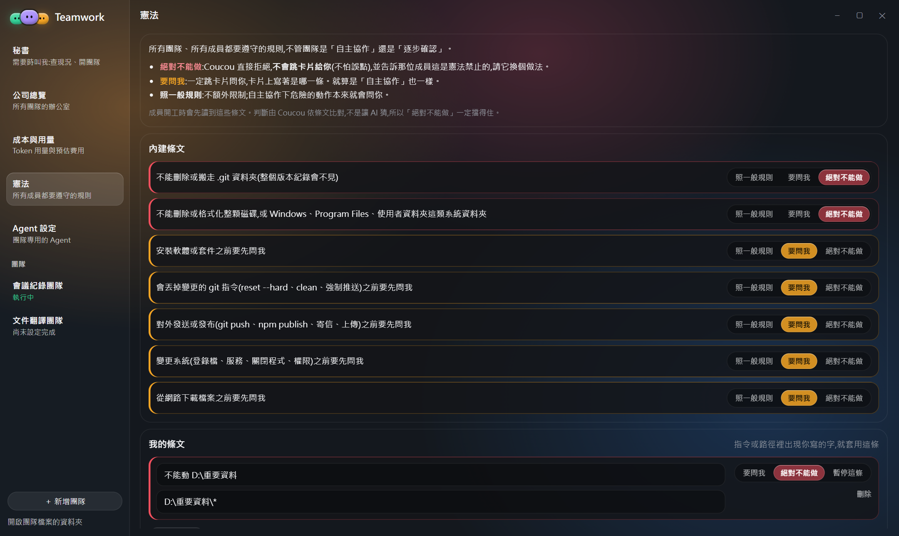
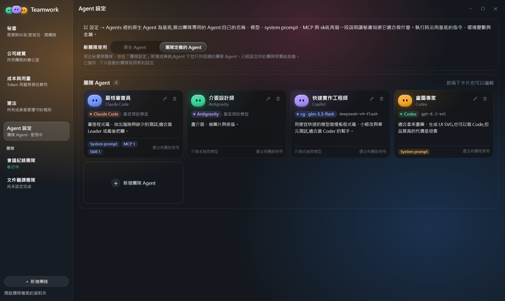
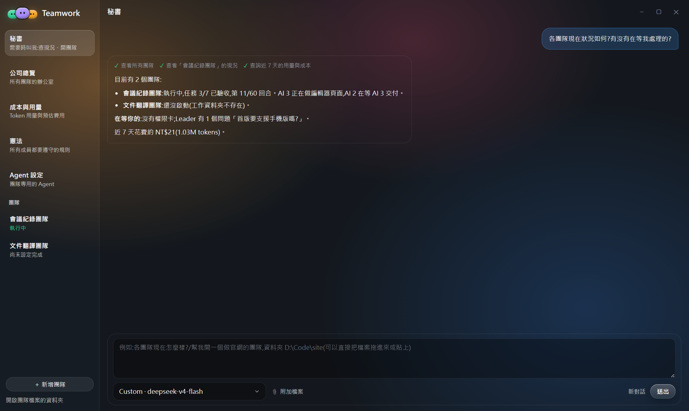
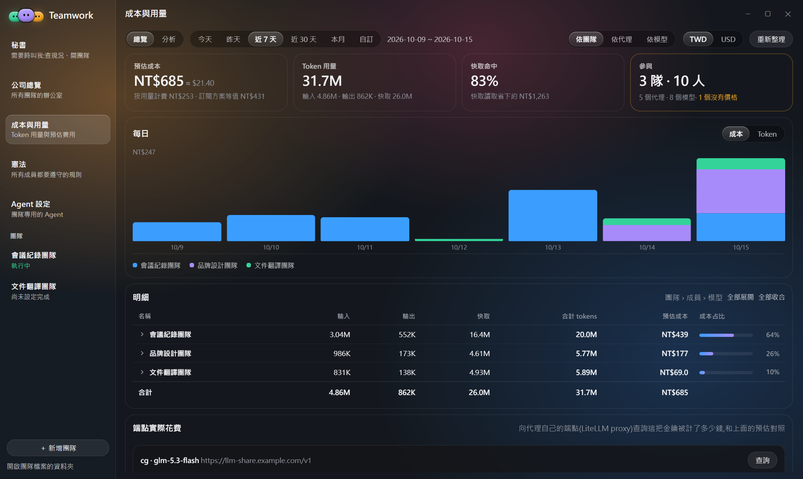
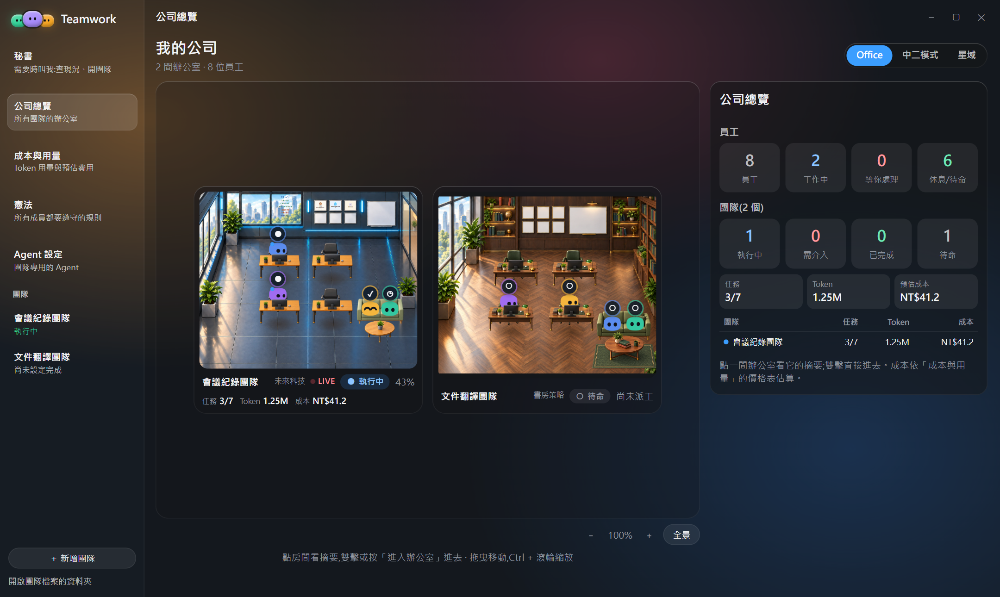
戰略價值與優點
你不再是人類瓶頸
描述目標、授權代理、驗收成果;中間的傳話與調度交給 Agent Center 和 Meta Agent。
並行提升吞吐量
沒有相依的任務同時推進,前端不用等後端。
消除重複性勞動
拆需求、寫測試、更新文件、跑建置,這些 Toil 交給Member Agent。
認知模型適配
四種 Agent 混編,各用所長、各用自己的模型與額度,不綁單一 AI。
守住 Token 預算
每位 Member Agent 只拿到自己需要的 Context;回合上限與成本頁隨時掌握花費。
狀態有憑有據
進度、等待、交付都來自任務庫事件,不從聊天內容猜。
放手但不失控
自主協作省掉大量確認;危險動作由你決定,禁止事項不會被誤點放行。
一眼看全隊
即時畫面、協作地圖、溝通紀錄、成本,一個視窗看完;瀏海島也有團隊狀態與核准卡。
秘書代勞、可接續
一句話查現況、開團隊;暫停、加人、調回合、重新開啟後都接得上。